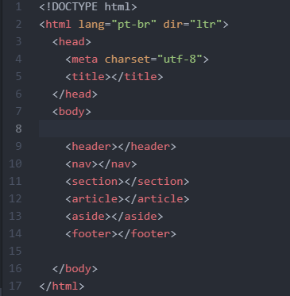
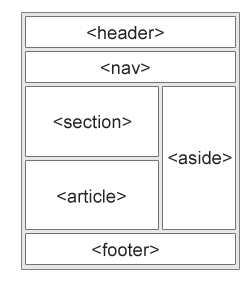

Dentro da liguagem html, existem dois tipos de elementos, os elementos semânticos e os não semânticos.
A diferença entre eles é a forma que eles se comunicam com o navegador, basicamente os elementos semânticos dizem a sua função para o navegador, já os não semânticos não dizem.
A função da tag Header é criar um cabeçalho para a página.
O cabeçalho serve para por algum tipo de conteudo introdutório, ou até mesmo alguns links de navegação (normalmente estes links são postosna tag Nav),
é comum encontrar na tag Header outras tags, como por exemplo titulos (de h1 até h6), logotipos do site, icones e informações sobre o site e autor do mesmo.
A tag Nav tem uma função um pouco similar a do Header, já que ela serve para que o desenvolvedor coloque os links para a navegação dento da página, assim facilitando a vida do usuário.
É importante ressaltar que nem todos os links da página devem estar no Nav, ele deve armazenar só o conteudo principal da página.
A tag Section é usada para criar seções dentro da página.
Uma seção é um conjunto de conteudosm onde normalmente fica as informações sobre o assunto do site,
dentro dessa teg pode haver outras tags, como por exemplo a tag Article que será explicada abaixo.
A tag Aticle tem a função de conter conteudos independentes dentro da página.
Isso quer sizer que ela tem que ser suficiente sózinha, exemplos do que pode ser posto nessa tag são Postagens de blog, postagens de foruns e artigos de jornal.
Assim como a tag anterior (Section), dentro dessa tag pode ir outras tags, como por exemplo a tag Section.
A tag Aside é responsavel por guardar conteudos externos à página.
Exemplos desse tipo de conteudo seriam anúncios, lembrando que é sempre importante esses conteudos terem relação com a página.
Esta tag normalmente fica na parte direita da página.
A tag que fica na parte mais baixa da página, a tag Footer, que é responsável pelo rodapé da página.
Aqui normalmente ficam os conteudos como informações sobre o author da página, informações de direitos autorais, informações de contato e um link para o topo do site.
E por fim, o Layout, ele não é uma tag, mas sim a junção delas em uma página, a maneira que as tags são postas na página. Além de ser bem distribuido e agradavel aos olhos, o Layout deve seguir padrões, usando as devidas tags para as suas funções corretas.
 